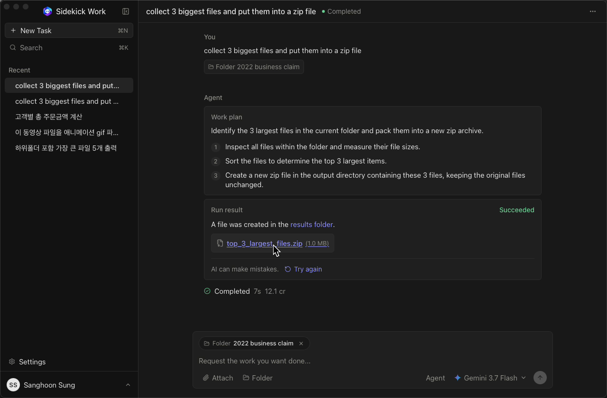

Talk or do
Each turn chooses chat for Q&A or do-mode to carry out the task on your PC. Force either with /chat or /script.
Local CLI · Agentic AI
ai-agent-x — ask, then it does the work
Describe the job in plain language. The agent plans it, runs it on your machine, and delivers the result — not just advice.

Chatbots stop at suggestions. AI Work Agent executes — finding files, transforming documents and images, producing outputs under a sandboxed attempt folder, and retrying when a step fails.
Each turn chooses chat for Q&A or do-mode to carry out the task on your PC. Force either with /chat or /script.
Work happens locally in the project virtualenv. Reads can go anywhere; writes stay inside the current attempt folder so originals stay read-only.
Built-in tools for Excel, Word, PowerPoint, PDF, and images are auto-cataloged so common jobs finish without ad-hoc package hunting.
Execution loop
The agent streams its plan, carries out the steps, installs missing packages after confirmation when needed, and can automatically repair and retry up to a configured limit.
Safe execution
Before run, static checks flag delete, write, and rename risks. At runtime, filesystem guards confine changes to the attempt directory. Transforms read sources and save new artifacts — Downloads and Desktop files are never overwritten in place.
What it can do
Attach folders with /attach, then ask for real outcomes: resize photos, reshape spreadsheets, extract PDF text, build slides. Helpers under agent_tools/ register themselves into the agent catalog at runtime.
Say what you need, optionally /attach files or folders, and pick a model with /model.
It chooses chat or do-mode, streams the plan, and uses conversation history for follow-ups like “do the same for the next folder.”
Work executes locally; results land in the attempt folder. On failure it repairs and retries within the limit you set.
OpenAI, Claude, Grok, Cerebras, Kimi, and DeepSeek via .env. Windows, macOS, and Linux with setup/run scripts that keep everything inside .venv. Python is the engine under the hood — the product is getting the work done.
I design and build AI Work Agent end to end — the ask-and-execute loop, streaming CLI, multi-provider LLM client, local execution sandbox and safety scans, auto-discovered tool registry, and the operator workflow around history, attachments, and saved runs.
Built with Python, OpenAI & Anthropic SDKs, prompt_toolkit, pandas/openpyxl, python-docx, python-pptx, pypdf, and Pillow.